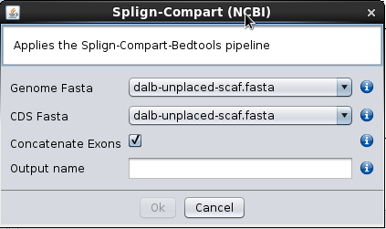

When genomes are non-annotated and genes have (or are suspected to have) introns, the Splign-Compart (NCBI) option under Operations can be used to annotate exons or genes, as long as a CDS reference sequence is available from a closely related species. How closely related the species must be depends on how fast the gene(s) in question evolve. For instance, a few highly conserved Drosophila virilis genes can be annotated this way using as reference Drosophila melanogaster CDSs (the common ancestor of the two species lived more than 40 million years ago). When using the Splign-Compart (NCBI) option the user must specify the FASTA file containing the genome to be annotated (Genome Fasta), as well as the file containing the reference CDSs (CDS Fasta) and the name of the output file (Output name). The resulting file will be saved in the /fasta/nucleotides folder that is located in the specified repository folder, and thus can be used in further operations such as Blast analyses. If the Concatenate Exons option is used then adjacent exons will be concatenated. Therefore, if an annotation is obtained for every exon of a given gene, the resulting sequence will be the complete CDS. The resulting CDS is based on the nucleotide homology to a given sequence, and thus may produce CDS sequences with lengths that are not multiple of three, if for instance, sequencing errors causing frameshifts are present in the genome to be annotated. Nevertheless, the existence of intron splicing signals at the exons 5’ and 3’ ends is taken into account. When using this option, it is advisable to use short FASTA headers, avoid the use of special characters, as well as new lines within sequences, otherwise the pipeline will likely crash. Remember that the reformatting of any FASTA file can be easily performed using the BDBM Reformat Fasta option under the Operations tab (see below). Since this is a homology based approach, it is possible to keep the stop codon in the reference sequence. When this is done, the stop codon will be likely included in the resulting annotation as well, increasing the chances of having a complete annotation, even when the previous codon differs in the reference and target sequences. The inclusion of a stop codon in the CDS annotation is also a guarantee that the CDS is indeed complete.

Splign-Compart (NCBI)